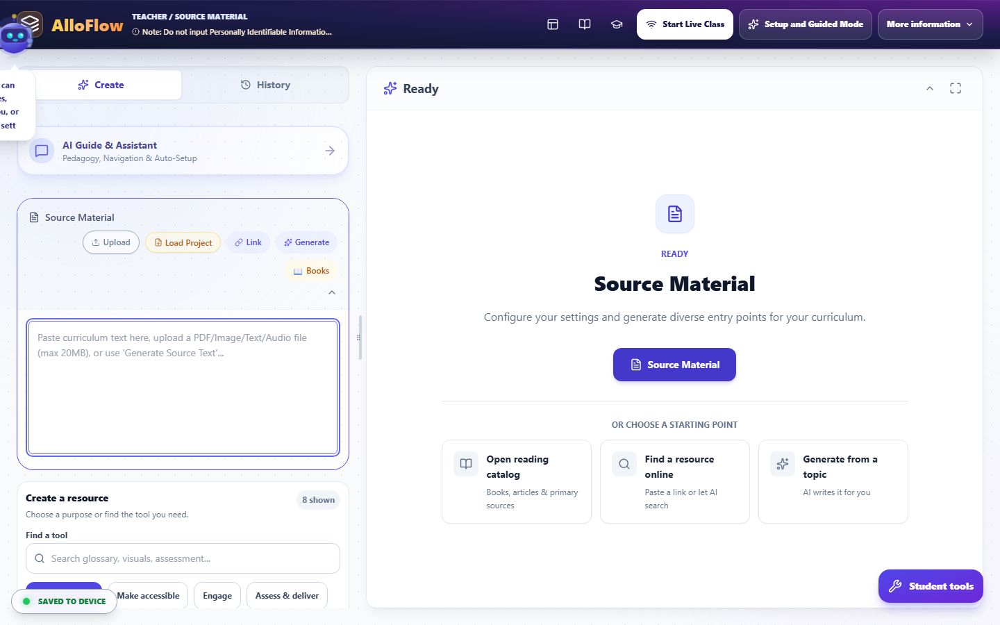
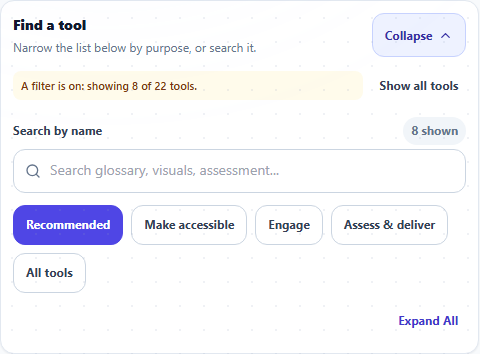

Prepare a purposeful, differentiated lesson
Turn source material into a purposeful, differentiated lesson package.
- Best for
- Lesson planning
- Typical use
- 15-30 minutes
Search the guide
Type one or more words to search every chapter.
This chapter turns the quick start into a repeatable planning routine. The aim is not to generate the largest collection of resources. It is to build a small, coherent package in which each item has a clear job: establish meaning, remove a barrier, support practice, or reveal learning.
Begin with the learning goal and evidence of success. Then choose AlloFlow tools because they serve that design. If you are preparing your first resource, start with Start here.
Plan from the barrier, not the tool
Write the shared target before selecting formats:
Students will explain how energy moves through a food web and support the explanation with evidence from the source.
Next, identify where access may break down. A barrier is a feature of the task or environment, not a label attached to a student.
| Possible barrier | Planning response | Possible resource |
|---|---|---|
| Dense background text | Clarify structure and foreground essential ideas. | Chunked or adapted text with preserved key concepts |
| Unfamiliar academic vocabulary | Preteach a small set of terms in context. | Glossary, examples, visuals, or word practice |
| Multi-step directions | Make sequence and completion criteria visible. | Numbered directions, checklist, or visual organizer |
| Limited background knowledge | Build a bridge without replacing the core source. | Brief overview, timeline, concept map, or worked example |
| Language demands obscure content knowledge | Support comprehension and expression. | Translation, bilingual glossary, sentence frames, or oral option |
| One response mode excludes participation | Offer another way to demonstrate the same target. | Written, spoken, visual, organized, or interactive response |
| Students are ready for greater complexity | Extend the reasoning rather than add busywork. | Competing evidence, transfer task, debate, or higher-depth prompt |
Do not assume every student needs every support. Too many choices can become a new barrier.
Build the instructional source
Select a trustworthy source
Open Source Material in Guided Mode or the full workspace. Use a source you are permitted to share and that you can evaluate. Depending on the deployment, you may be able to paste or write text, import a supported file, open a reading catalog, use a web resource, or generate a starting text from a topic.

Interface reference captured August 13, 2026 from the public AlloFlow deployment. Availability and labels vary by deployment.
Before generation, make the source self-contained:
- Keep the title, author or organization, and publication context when relevant.
- Preserve headings, labels, tables, formulas, units, and citations.
- Include the passage students will actually use, not an entire document when only one section matters.
- Explain unfamiliar references that you would normally clarify aloud.
- Retain important nuance, uncertainty, and competing perspectives.
- Remove teacher notes, answer keys, and student information.
AlloFlow can transform a weak source into polished-looking weak material. Source quality is therefore one of the most important teacher decisions in the workflow.
Inspect meaning before changing readability
If an analysis or source-review step is available, use it to notice complexity, vocabulary, organization, possible misconceptions, and missing context. Treat automated analysis as a planning suggestion, not a measurement of a student's ability or a final judgment about the text.
Create a short “must preserve” list before adapting:
- Essential concepts and relationships.
- Domain vocabulary students are expected to learn.
- Evidence students must cite or interpret.
- Productive complexity that belongs to the learning goal.
- Author perspective, tone, or uncertainty that affects meaning.
This list protects rigor. A clarified version may shorten sentences or explain terms, but it should not remove the causal relationship students must reason about.
Configure the assignment
Write directions that survive independent use
In Assignment Directions & Goals, write what a student needs when the teacher is not standing beside the screen:
- State the learning goal.
- Name the source or resource to use.
- Tell students what to do in order.
- Define the expected product.
- Show the success criteria.
- Explain how and where to submit, save, or finish.
- Add an extension or stopping point when appropriate.
Use concrete verbs such as compare, explain, model, revise, justify, or solve. “Complete the activity” does not tell students what thinking matters.
Add only useful planning constraints
Most of these live in one place. Set the grade level, output language, translations, standards, interests, and Depth of Knowledge in Universal Settings before you generate, so every part of the pack agrees. Set subject and response format where the tool offers them. Do not enter a student name or confidential profile to personalize a resource. Describe a support in general terms, such as:
- “Use grade-level science vocabulary with a plain-language definition on first use.”
- “Provide a Spanish-English glossary but keep the final explanation in English.”
- “Add sentence frames for claim, evidence, and reasoning.”
- “Include one worked example and one problem students complete independently.”
Interests can increase relevance, but they should not stereotype students or distort the content. A theme is useful only if it makes the task clearer or more engaging.
Choose formats by purpose
Finding the right tool
The sidebar's Find a tool panel narrows the tool list by purpose (Recommended, Make accessible, Engage, Assess and deliver) or by search. It filters what you see; the tool cards below it are what actually create. While a filter is on, the panel says so in words ("A filter is on: showing 8 of 22 tools"), and you can only hide the panel when no filter is active, so tools can never go missing without an explanation on screen.

Interface reference captured August 16, 2026 from the public AlloFlow deployment.
Build a small lesson package
A practical package usually has three to five parts:
- Orientation: learning goal, short overview, or activating question.
- Access to meaning: the source plus a glossary, visual, audio, or clarified version as needed.
- Guided practice: organizer, worked example, sequence, sort, or scaffolded discussion.
- Evidence of learning: quiz, written response, model, explanation, or performance.
- Next step: feedback, revision, extension, or targeted practice.
You do not need a different tool for every part. A well-designed source, clear directions, and one strong response task may be enough.
Match common outputs to instructional jobs
| Output | Best use | Teacher check |
|---|---|---|
| Adapted text | Reduce unnecessary language load while preserving the concept. | Compare line by line for omissions, changed claims, and lost evidence. |
| Glossary or word support | Prepare students for a small set of essential terms. | Check definitions in context, pronunciation, translations, and examples. |
| Visual organizer | Show relationships, sequence, categories, or cause and effect. | Confirm reading order, labels, text alternatives, and logical connections. |
| Structured directions | Make a complex task actionable. | Test the steps without relying on verbal explanation. |
| Sentence frames or writing scaffold | Support entry into disciplinary expression. | Make frames optional or gradually removable; do not write the reasoning for students. |
| Quiz or quick check | Reveal current understanding efficiently. | Verify answer keys, distractors, wording, scoring, and alignment to the goal. |
| Concept sort or sequence | Make student thinking visible through classification or order. | Confirm that categories are defensible and ambiguity is intentional. |
| Adventure, game, or simulation | Create repeated practice, exploration, or a meaningful context. | Check that play advances the target rather than hiding it. |
| Audio or read-aloud support | Provide another route into text. | Listen for pronunciation, pacing, language, and missing content. |
| Extension prompt | Increase transfer, argument, design, or synthesis. | Extend cognitive demand instead of adding more of the same work. |
Generate, inspect, and revise
Work one resource at a time
Generate the anchor resource first. Compare it to the source and learning goal before creating dependent items. A quiz made from an inaccurate adaptation will repeat the error; a translation of that quiz will spread it further.
Use a simple review loop:
- Generate a draft.
- Read it beside the source.
- Mark inaccuracies, omissions, confusing language, and accessibility barriers.
- Revise directly or regenerate with a precise instruction.
- Preview the result.
- Save a checkpoint.
Prefer targeted revision requests such as “restore the explanation of evaporation in paragraph three” over “make it better.” Keep the original source available for comparison.
Apply the accuracy check for the subject
Every teacher should check facts, attribution, age appropriateness, and alignment. Also use a subject-specific pass:
- English language arts: quotations, plot details, author claims, genre, and interpretation presented as fact.
- Social studies: dates, names, sourcing, perspective, geographic labels, and oversimplified cause and effect.
- Science: units, mechanisms, models, safety procedures, exceptions, and the difference between evidence and explanation.
- Mathematics: notation, diagrams, units, assumptions, worked steps, equivalent answers, and distractor logic.
- Arts and electives: technique, terminology, attribution, cultural context, equipment safety, and licensing.
- Health and SEL: non-stigmatizing language, local policy, crisis boundaries, and whether a classroom activity is appropriate for the topic.
Never rely on a plausible explanation without working through it yourself.
Differentiate without separating students from the goal
Keep a common intellectual center
Students may use different representations or response modes while working toward the same essential understanding. For example:
- Everyone explains a food-web disruption.
- Some students use the original article; others use a clarified version with the same evidence.
- Some plan with a labeled diagram; others use a claim-evidence-reasoning organizer.
- Students may type, record, or present an explanation when each mode can show the target.
If a pathway changes the goal, say so explicitly and base that decision on the student's instructional plan and teacher judgment, not an automated recommendation.
Name pathways by function
Use neutral, useful labels:
- “Original source”
- “Source with glossary”
- “Read and listen”
- “Visual planning”
- “Practice with examples”
- “Extension: evaluate another case”
Avoid public labels based on perceived ability. In a live lesson, use private individual or group routing when that better protects student dignity. See Live sessions.
Preserve student agency
When appropriate, let students choose a support and switch if it is not helping. Teach them to explain the choice: “I used the visual organizer because I needed to compare two causes.” This makes accessibility a normal learning skill rather than a hidden accommodation.
Assemble and preview the package
Check sequence and cognitive load
Open the resources in the order students will encounter them. Verify:
- The first screen says what to do.
- Links and buttons have meaningful names.
- Required items are distinguishable from optional supports.
- Students are not asked to repeat information unnecessarily.
- Vocabulary and symbols stay consistent across resources.
- The evidence task uses material students were actually given.
- The final screen explains how to finish or submit.
For a 45-minute middle-school lesson, a realistic sequence might be:
- 3 minutes: goal and activating prompt.
- 10 minutes: source with chosen access supports.
- 8 minutes: partner organizer or model.
- 15 minutes: explanation, problem set, or investigation.
- 5 minutes: quick check and revision.
- 4 minutes: save, submit, and preview the next step.
Adjust for your class; the sequence is a planning example, not a built-in timing promise.
Test the real delivery format
Continue to Preview/Package/Deliver in Guided Mode or use the available preview and export controls in the full workspace.
- For a homework QR or link, choose Test latest student link and complete the first steps as a student.
- For a live lesson, join from a second device or browser profile, verify the code, and send one resource.
- For a document, inspect the exported file with keyboard navigation, zoom, and read-aloud or a screen reader when available.
- For print, use print preview and check page breaks, contrast, font size, and whether URLs or instructions still make sense on paper.
Two export formats look alike and are not: Print / Save as PDF produces a finished copy to read, while Worksheet produces a blank copy to write on, with ruled answer lines, fill-in bubbles, and a Name and Date header. The export screen explains each format under its selector.
If your lesson has both an adapted text and a glossary, the Worksheet format also offers a fill-in-the-blank version: glossary terms in the passage become numbered blanks with a word bank, and the teacher copy carries the answer key. It works in any lesson language.
Test again after a meaningful revision. Previewing an earlier version does not verify the final package.
Save, name, and hand off
Use Save Project before leaving the workspace when that option is available, then test Load Project with a copy. Keep final exports separate from working files. A simple naming pattern makes team use easier:
- Project: “unit-topic-purpose-date”
- Student resource: “topic-student-action”
- Teacher key: include “teacher” or “key” clearly
- Version: add a date or short revision marker
Store files according to district policy. Do not put student responses or identifying notes in a shared curriculum folder.
For independent delivery, include a short message outside AlloFlow that states the goal, due date, expected product, accessibility contact, and fallback route. For a colleague, include the source, teacher-approved resources, answer key, intended sequence, and any deployment requirements.
Final preparation checklist
- The source is authoritative enough for the task and legal to use.
- The shared learning goal and success criteria are visible.
- Each generated item has a clear instructional purpose.
- Essential meaning and cognitive demand were preserved.
- Facts, calculations, translations, examples, and keys were checked.
- Pathway labels are neutral and do not expose student needs.
- The actual student route works on a school device and network.
- Audio, microphone, AI, and online dependencies have a fallback.
- Teacher-only material is separate from student-facing material.
- Accessibility was checked in context, not assumed from the format.
- The project and final deliverables were saved in approved locations.
- You know what evidence the lesson will produce and what you will do next.
Continue with Accessibility and UDL for a deeper learner-experience review, Live sessions for synchronous delivery, or Review evidence and plan next steps for using classroom evidence responsibly.